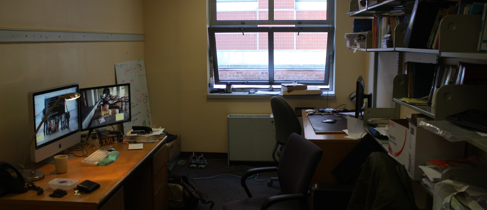

Kangkook Jee
-
Network Security Lab
Department of Computer Science
Columbia University in the city of New York
522 Computer Science Building
1214 Amsterdam Avenue, M.C. 0401
New York, NY 10027, USA
I am Kangkook Jee, the 6th year ph.d student working for Dr. Angelos D. Keyromytis. Before joining Columbia University, I spent five years as software engineer in IBM Korea supporting AIX Operating System and IBM Java Virtual Machine(JVM). Before IBM, I graduated from Korea University majoring mathematics and minoring computer science. My main research interests are system security, programming language, and reliabile systems.
Currently, I am working for number of projects that applies various types of static and dyanamic analysis techiques that attempts to extracts valuable informations directly from program binaries. If you are interested in any of those items, please feel free to contact me.